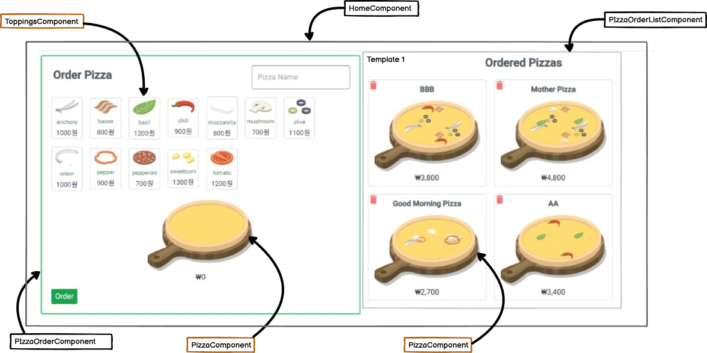

The image and animation program used in this project were referenced from other sites. (Angular source: https://github.com/cypress-io/angular-pizza-creator)
This program was originally developed using RxJS and NgXS (a state management program) but was redeveloped using Angular Signal recently.
Unable to connect to the database, I applied the storage of Pizza Data to local storage.
Applied technology
Angular: 16.1.4
Signal
RxJS: 7.8.0
Tailwind: 3.3.0
Basic structure

Description of Program Source
toppings.component.ts: The images were composed in SVG format, and since one type of topping can be applied multiple times, each image was arranged into five sets to distribute the toppings evenly on the dough. When a topping is selected, it is saved in a separate array. The order of storage is determined so that toppings added later are placed on top of those already placed.
pizza.component.ts: This component places the selected toppings onto the dough.
pizza-order.component.ts: This component is responsible for registering or modifying the pizza.
pizza-order-list.component.ts: This component displays the newly created pizzas in a list, and when one is selected, it enters modification mode.
home.component.ts: This component includes pizza-order.component.ts and pizza-order-list.component.ts.